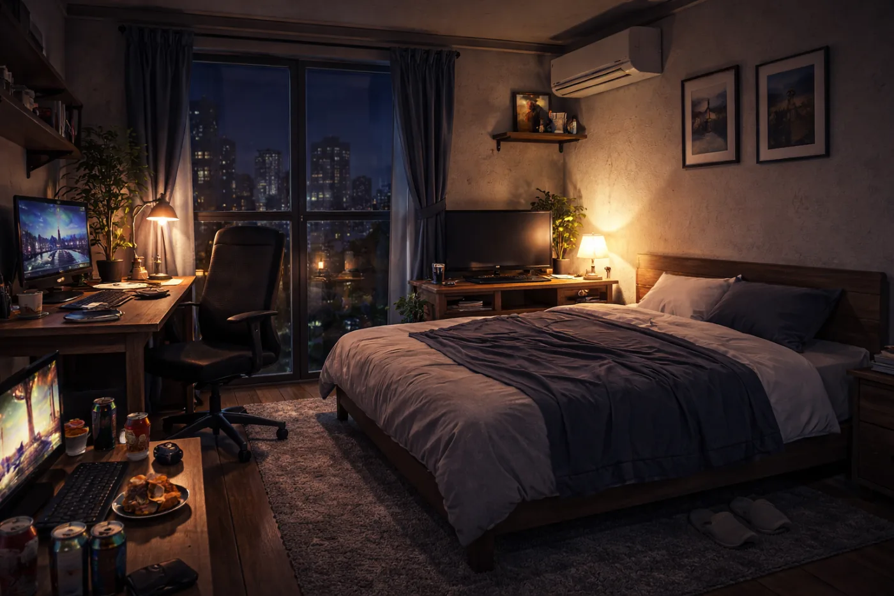
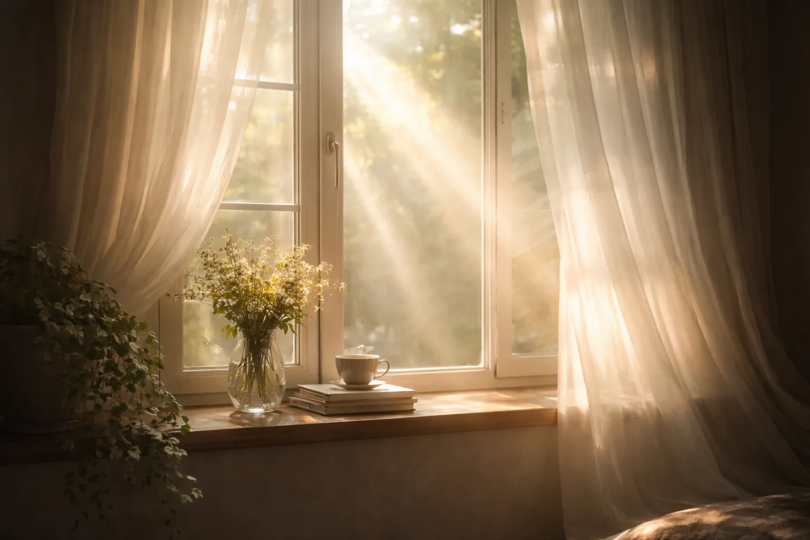
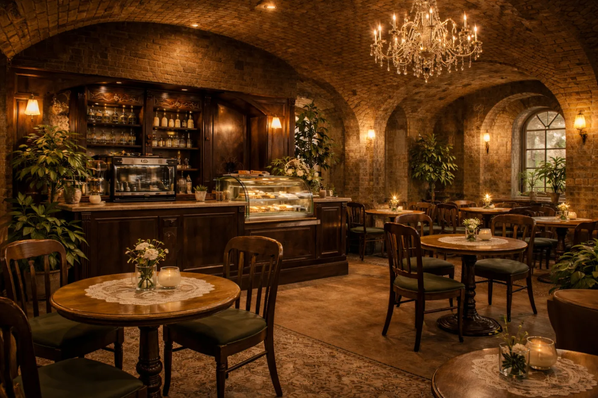
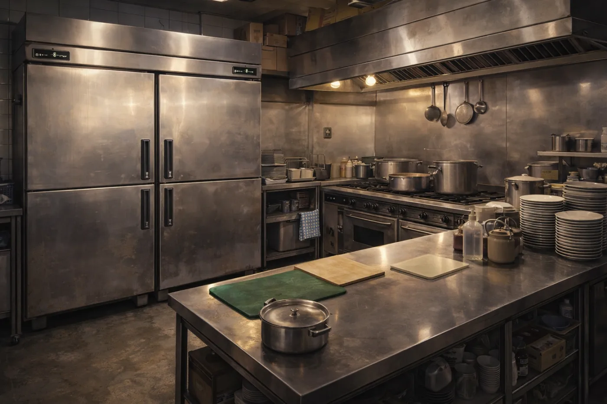
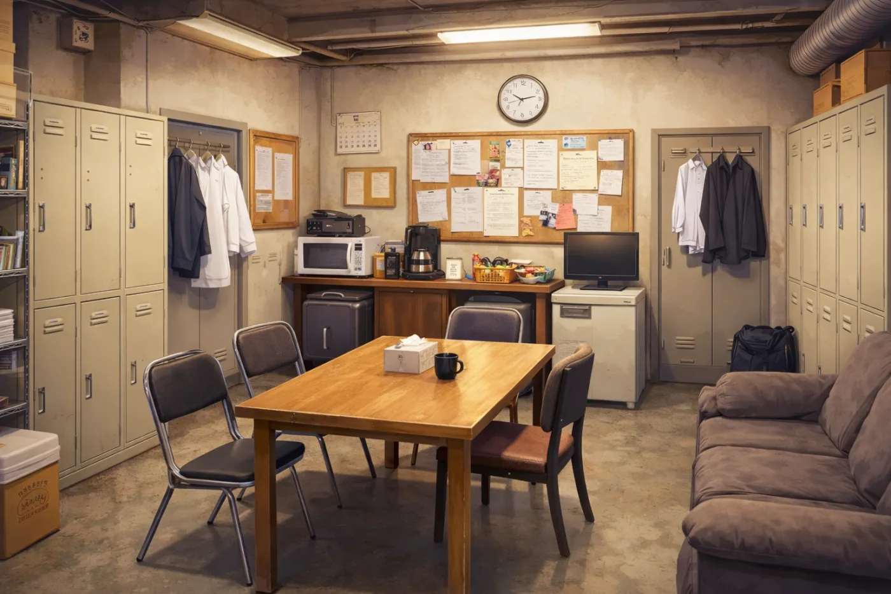
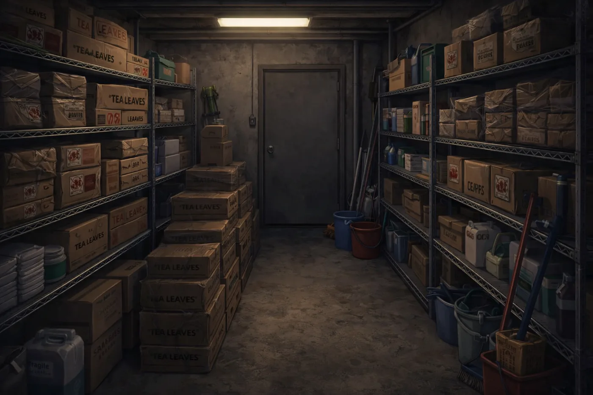
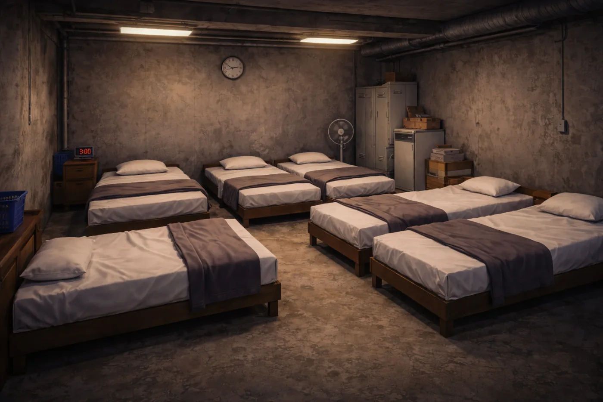
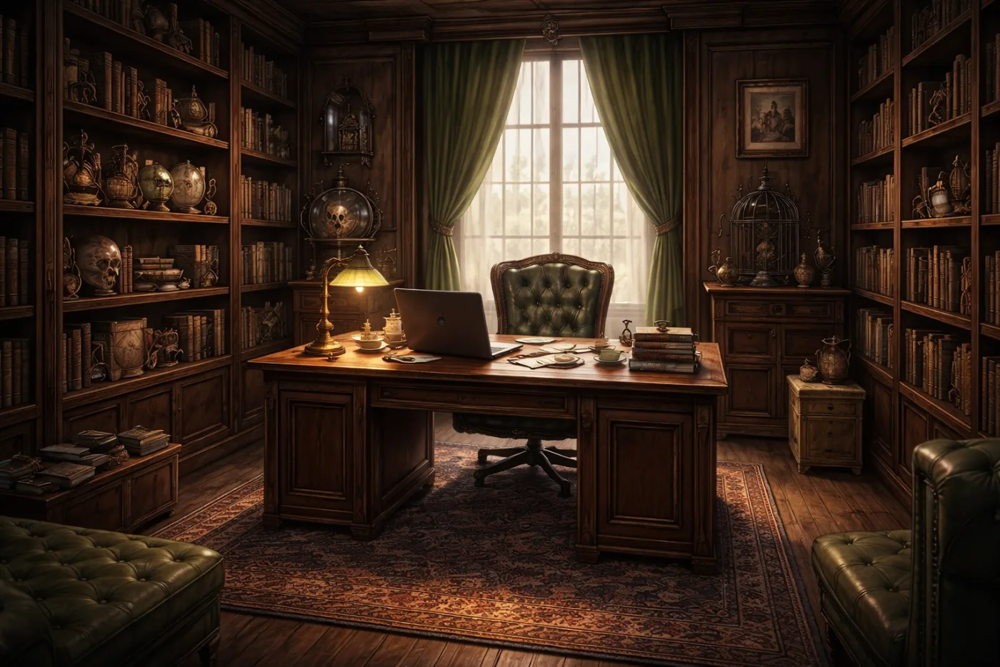

セッションの前に、これだけは知っておきたいこと
Café Astraea








The Eternal Sleep
Dreamlands
Public Handouts
探索者は全員、以下の共通情報を持っている。
「あなたは夢に飲まれている。」
店主・神応寺透の息子/娘である。紅茶とは幼少の頃からの付き合いで、5年前から紅茶マイスターとして働いている。夢の世界には何度か訪れたことがある。
「あなたは夢が自在であった。」
アルバイトの友人・逢瀬から勧誘され、2年前からシェフとして働いている。夢の中に行かなくてはならない場所がある。
「あなたは夢を従えている。」
神応寺透に勧誘されて3年前からウェイターとして働いている。なぜか戦いの心得がある。
「あなたは夢が愛おしかった。」
神応寺透の古い友人であり、4年前からパティシエとして働いている。幸せな夢を見ることが多い。